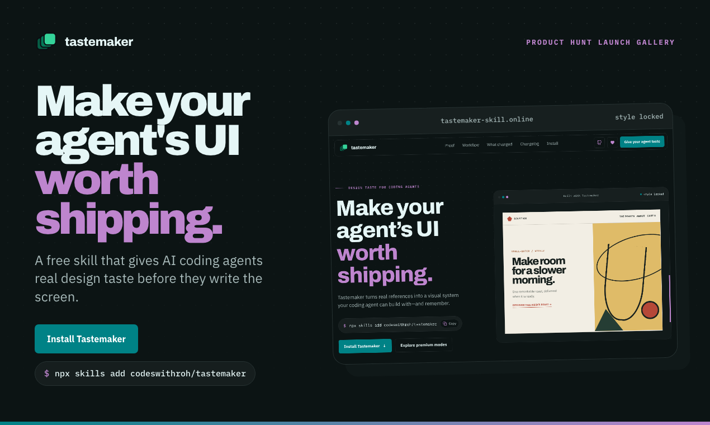
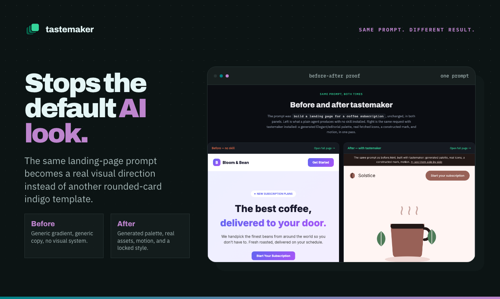

Brief
Extract the promise, audience, surface, and stakes.
design taste for coding agents
Tastemaker studies references, chooses the visual system, adds assets and motion, then remembers what you keep or reject.
npx skills add codeswithroh/tastemaker



the story
The agent does not jump from words to cards. Tastemaker makes it pass through references, asset casting, motion grammar, and memory before the page exists.
Extract the promise, audience, surface, and stakes.
Study direct, adjacent, cultural, system, and anti-reference lanes.
Choose the hero anchor, process artifacts, proof, modes, and texture.
Make the visual cast move with scroll, parallax, pins, and reveals.
Keep what works. Reject what looked generic. Carry taste forward.
asset curation
Hero anchor, mode range, process artifacts, proof, texture, and micro assets each get a job. Repetition gets rejected before it reaches the page.
 Hero anchor
Hero anchor
 Mode range
Mode range
hero anchor
mode range
process artifact
texture object
Process
 Texture
Texture
same poster reused three times
works across agents
Tastemaker stays portable because the design judgment lives in Markdown, scripts, style locks, and decision logs.


premium modes
Tastemaker can shift the whole visual register: typography, density, radius, asset language, and motion tempo move together.
Minimalist
Soft calm
Glassmorphic
Brutalist
current capabilities
Builds a board from competitors, adjacent products, cultural references, interface systems, and anti-references.
Chooses macrostructure, section rhythm, type behavior, asset style, and the page’s one brave break.
Uses screenshots, SVG scenes, icons, photos, and demo captures with one visual DNA.
GSAP timelines, scroll-linked artifact movement, staggered sections, pointer feedback, and reduced-motion fallbacks ship in the same pass.
Runs contrast, SVG validation, motion audit, and anti-slop scans before handoff.
Marketing pages, dashboards, app shells, forms, demos, and empty states get different rules.
what changed
Project style choices live in the repo. Personal preferences can live locally. Rejected directions become future guardrails instead of getting forgotten next session.
Palette, type, shape, assets, motion, and do-not rules for this project.
Append-only keep, reject, and pending-review decisions from design passes.
Reusable preferences promoted only when the user chooses or repeats them.
visual proof
free and local
No hosted editor, no account, no separate design handoff. Put the taste layer where the agent already works.
npx skills add codeswithroh/tastemaker